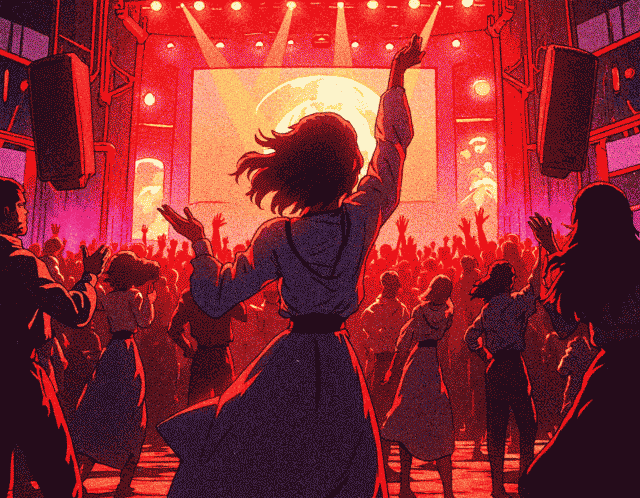

Music Sources

Online Radio (Live)
SomaFM
-
Fullpage player
kohina
-
Web Player
SceneSat Radio Player
-
SceneSat Full Albums
qUAntUm RaDio!
Music Podcasts (Episodes)
reLive
-
Fullpage player
-
Standalone Applications (Win/OSX)
Suzy Solar Power Sessions